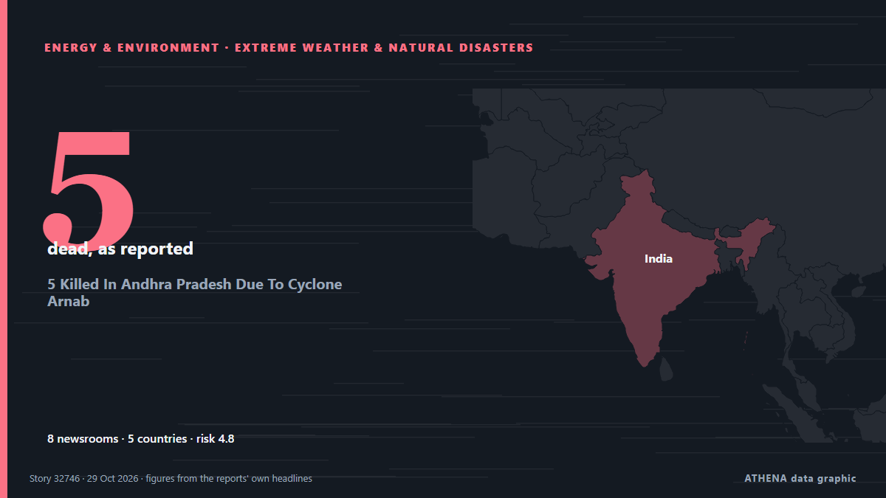

5 Killed In Andhra Pradesh Due To Cyclone Arnab

Cyclone Arnab made landfall as a "very severe" cyclonic storm, the third-highest category on IMD's scale. من NDTV
نشرته بشكل مستقل 8 مصادر في 5 دول منذ 26 أكتوبر، وأول من نشره Daily Mirror؛ والتغطية تتراجع. يقدّر ATHENA الخطر بأنه متزايد (4.8/10)، ويعود ذلك أساسًا إلى خطورة الضرر الموصوف وجودة الأدلة. الثقة 81٪ (مرتفعة)، وعدد المصادر المستقلة المؤكِّدة: 8، بمتوسط موثوقية للمصادر يبلغ 71٪. وسائل الإعلام حسب البلد: الهند (17), سريلانكا (5), باكستان (2). التغطية: من 26 أكتوبر إلى 29 أكتوبر، 62 ساعة.
لماذا يهم: تؤثر تطورات الطاقة والموارد في أسعار الوقود والكهرباء وأمن الإمدادات والالتزامات المناخية.
ما الذي تغيّر: 6 تقارير جديدة من 5 غرف أخبار خلال 24 ساعة حتى 29 أكتوبر.
العنوان الأول: Odisha, Andhra Pradesh On Alert As Severe Cyclonic Storm Arnab Approaches
تُعرض العناوين بالإنجليزية كما نُشرت.
نظرة سريعة
اختير وقُيِّم وكُتب وفق منهجية ATHENA المنشورة. لا يتدخل أي محرر في الأحداث بعينها. كيف يُنتَج ›
| 26 Oct 11:19 UTC | 1 |
|---|---|
| 26 Oct 14:19 UTC | 2 |
| 26 Oct 17:19 UTC | 1 |
| 26 Oct 20:19 UTC | 0 |
| 26 Oct 23:19 UTC | 1 |
| 27 Oct 02:19 UTC | 4 |
| 27 Oct 05:19 UTC | 2 |
| 27 Oct 08:19 UTC | 4 |
| 27 Oct 11:19 UTC | 4 |
| 27 Oct 14:19 UTC | 1 |
| 27 Oct 17:19 UTC | 1 |
| 27 Oct 20:19 UTC | 1 |
| 27 Oct 23:19 UTC | 1 |
| 28 Oct 02:19 UTC | 2 |
| 28 Oct 05:19 UTC | 1 |
| 28 Oct 08:19 UTC | 1 |
| 28 Oct 11:19 UTC | 0 |
| 28 Oct 14:19 UTC | 0 |
| 28 Oct 17:19 UTC | 0 |
| 28 Oct 20:19 UTC | 0 |
| 28 Oct 23:19 UTC | 1 |
| 26 Oct 11:20 UTC | 3.3 |
|---|---|
| 26 Oct 15:11 UTC | 4.1 |
| 27 Oct 05:12 UTC | 5.2 |
| 27 Oct 20:11 UTC | 5.1 |
| 29 Oct 01:44 UTC | 4.8 |
لماذا هذه الأرقام
الأهمية
الخطر
الثقة
التغطية — من نشر الخبر ومتى
العنوان كما نُشر · يفتح الأصل- Daily Mirror · سريلانكاCyclonic storm ‘Arnab’ to intensify into very severe cyclonic storm tomorrow
- The Hindu · الهندAndhra Pradesh braces for 11th very severe cyclonic storm
- Daily Mirror · سريلانكاRed warning issued as Cyclonic Storm Arnab threatens rough seas around Sri Lanka
- NDTV · الهندOdisha, Andhra Pradesh On Alert As Severe Cyclonic Storm Arnab Approaches
- Daily Mirror · سريلانكاArnab intensifies; Heavy rain, strong winds to hit several areas
- The Hindu · الهندArnab becomes ‘very severe cyclonic storm’, light showers begin in north Andhra
- Hindustan Times · الهندVery severe cyclonic storm Arnab to trigger extremely heavy rain across 16 Andhra districts
- Hindustan Times · الهندOdisha steps up cyclone preparedness as Arnab intensifies; heavy rain warning for six districts
- Hindustan Times · الهندCyclone Arnab tracker: Landfall likely close to Yanam; storm's expected wind speed revised by IMD
- The Hindu · الهندCyclone Arnab: Odisha announces evacuation 48,000 in eight districts
- The Hindu · الهندCyclone ‘Arnab’: Odisha, Andhra Pradesh step up precautions ahead of landfall
- Channels TV · نيجيرياIndia Braces For Cyclone Arnab With Evacuations
- Dawn · باكستانIndia orders evacuations in Andhra Pradesh, Odisha as Cyclone Arnab looms
- The Hindu · الهندCyclonic storm Arnab impact on Telangana | Heavy-very heavy rainfall forecast in four districts, yellow alert in four more on Oct. 28
- Daily Mirror · سريلانكاImpact of Cyclone Arnab on Sri Lanka to ease from tomorrow
- Gulf News · الإمارات العربية المتحدةCyclone Arnab bears down on India: 136,000 evacuated as Andhra, Odisha on alert
- Indian Express · الهندCyclone Arnab LIVE Tracker: Where is cyclonic storm Arnab located? Track location, path and landfall updates here
- The Hindu · الهندCyclone ‘Arnab’: People living in thatched houses shifted to relief camp to prevent loss of life in Konaseema
- Hindustan Times · الهندCyclone Arnab starts landfall process along Andhra Pradesh coast, triggers heavy rain and strong winds
- The Hindu · الهندVery severe cyclonic storm ‘Arnab’ begins landfall near Narsapur; Vizag battered by rain
- Hindustan Times · الهندSevere cyclonic storm highlights: Cyclone Arnab to weaken further by midnight, move north-northwestwards, says IMD
- Daily Mirror · سريلانكاArnab makes landfall in India; Sri Lanka’s weather improves
- NDTV · الهند5 Killed In Andhra Pradesh Due To Cyclone Arnab
- Dawn · باكستانCyclone Arnab lashes India coast, no deaths reported
- The Hindu · الهندCyclonic storm Arnab brings rain to Telangana on October 28; orange alert in four districts, yellow in four more
- The Hindu · الهندCyclone Arnab highlights: New Bay system likely to head for Andhra coast; 300 villages marooned in Ganjam